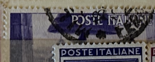
| SOURCE | TITLE| IMAGE MATCH | click to source page |
| eBay | ITALY Scott 579-580 USED OG LotX Cat $51.90 | eBay | 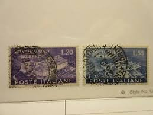 |
| eBay | Violet Used Postage Italian Stamps for sale | eBay | 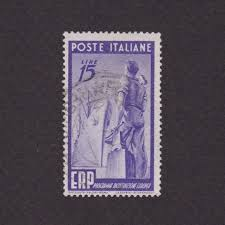 |
| Alamy | ITALY - CIRCA 1945: stamp printed by Italy, shows Breaking Chain, circa 1945 Stock Photo - Alamy | 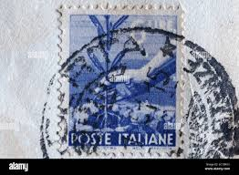 |
| Dreamstime.com | Pisa Stamp Stock Photos - Free & Royalty-Free Stock Photos from Dreamstime | 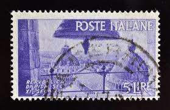 |
| Todocolección | sello italiano. la fucina. 50 cent. año 1850. u - Buy Antique stamps of Italy on todocoleccion | 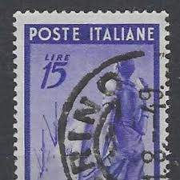 |
| Pngtree | Breaking Chains Background Images, HD Pictures and Wallpaper For Free Download | Pngtree | 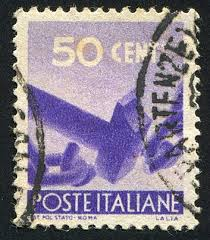 |
| Shutterstock | Stamp Of Pisa: Over 75 Royalty-Free Licensable Stock Photos | Shutterstock | 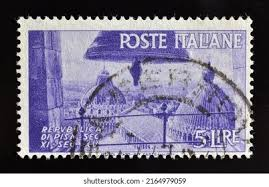 |
| eBay | Trees Italian Stamps for sale | eBay | 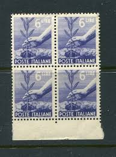 |
| eBay | Timbres Suisse 2005 Mi 1906-1909Fb Folienblatt (complète edition) obl (10463306 | eBay | 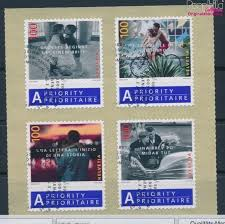 |
| eBay UK | TRIESTE SCOTT 43 USED F/VF - 1949 15L VIOLET ISSUE - SOUND CV $17.50 | eBay UK | 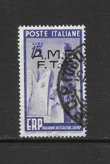 |
| Dreamstime.com | Cancelled Postage Stamp Printed by Italy, that Shows Hammer Breaking Chains, Circa 1961. Editorial Stock Image - Image of historic, heritage: 198360184 | 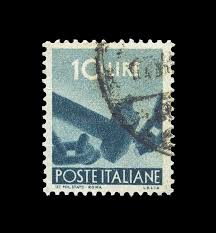 |
| Mesa Stamps | Authorized delivery stamp |  |
| eBay | MINT STAMP Italy AMG F.T.T. Scott# EY3 Poste Italiane Very Fine | eBay | 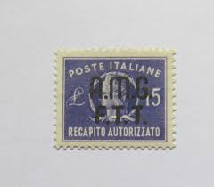 |
| eBay | ITALY - SCOTT# 546 - USED - CAT VAL $25.00 | eBay | 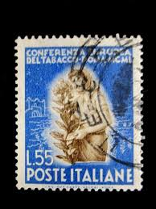 |
| eBay | R2140 Italy/TriesteA 1949 European Recovery 15L. 1v. used | eBay | 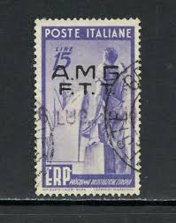 |
| HipStamp | Authorized delivery Lire 15 filigree variety in fine position "DB" | Europe - Italy, Stamp / HipStamp | 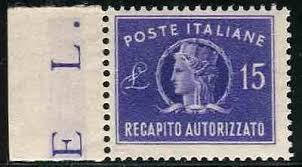 |
| Federal University of Agriculture, Abeokuta | TRIESTE STAMPS | 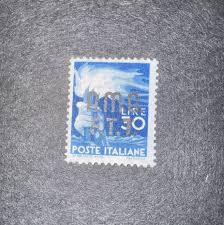 |
| eBay | Italy Back of Book Stamps for sale | eBay | 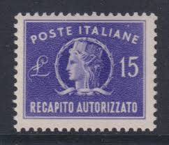 |
| Alamy | ITALY - CIRCA 1946: a stamp printed in the Italy shows View of Cathedral Domes, Pisa, circa 1946 Stock Photo - Alamy | 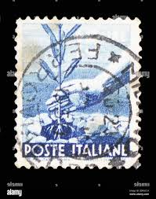 |
| eBay | 1947 Italy Special Delivery Cover - Genoa to Papiermühle bei Bern, Switzerland | eBay | 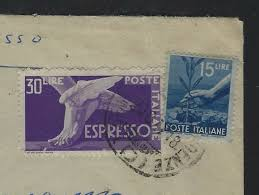 |
| Find Your Stamps Value | Value of poste italiane l90 stamps | 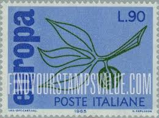 |
| The RainKey | Stamps – Page 640 – The RainKey | 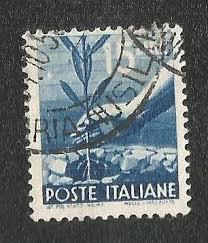 |
| Cherrystone Auctions | U.S. & Worldwide Stamps - July 10-12, 2013 - ITALY | 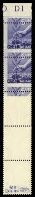 |
| Alamy | Rome stamp hi-res stock photography and images - Alamy | 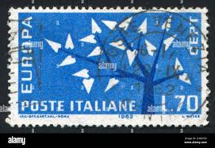 |
| eBay | Italy 15 Lire Postage Stamp Blue | eBay | 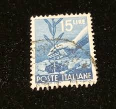 |
| Shutterstock | Italy Circa 1963 Cancelled Postage Stamp Stock Photo 2661282323 | Shutterstock | 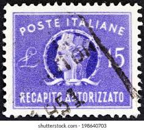 |
| eBay | Italy 1949 YV Express 36 MNH VF | eBay | 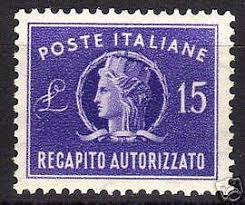 |
| eBay | Historical Figures Stamps / FDC First Day Issue Envelopes / Lot of 7 | eBay | 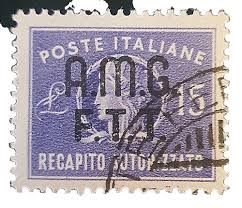 |
| Alamy | ITALY - CIRCA 1965: a stamp printed in Italy shows map of Italy with Milan-Rome highway, circa 1965 Stock Photo - Alamy | 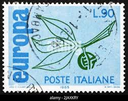 |
| eBay | Italy 1935 #347 Leonardo da Vinci - F Used | eBay | 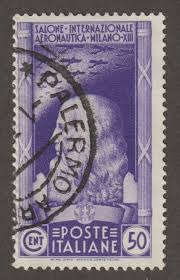 |
| eBay | ITALY 50 CENT 1941 STAMPED POSTAGE STAMP OF MUSSOLINI AND HITLER,HELMETED,Descri | eBay | 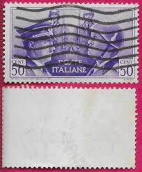 |
| Shutterstock | 79+ Thousand Italy Postage Stamp Vintage World Royalty-Free Images, Stock Photos & Pictures | Shutterstock | 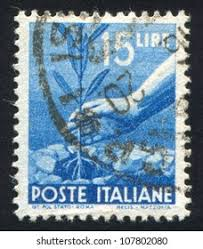 |
| Shutterstock | Italy Circa 1963 Cancelled Postage Stamp Stock Photo 2664125109 | Shutterstock | 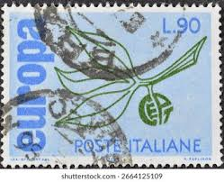 |
| Dreamstime.com | Planting Tree editorial photography. Image of 1945, nursling - 236009222 | 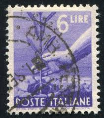 |
| eBay | ITALY Sc 546 used, nice stamp here, check it out! | eBay | 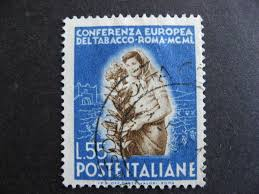 |
| Stamp Community Forum | Europa - 1962 To 1964 - Stamp Community Forum | 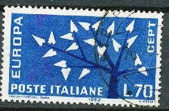 |
| Flickr | Italy | k3s ( Kris ) | Flickr | 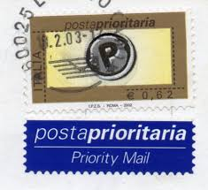 |
| eBay | Poste Italiane Foreign 15 Lire Stamp Used - #A1241 | eBay | 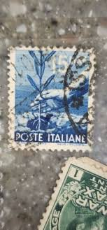 |
| Alamy | Rome olympics hi-res stock photography and images - Alamy | 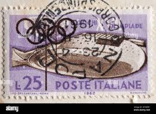 |
| eBay | ITALIEN 1948 746-747 ** POSTFRISCH TADELLOS (I1005 | eBay | 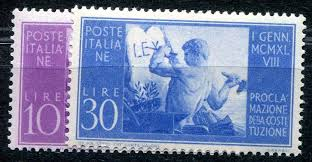 |
| eBay | ITALY 1948 year, used stamps , Michel # 746-47 | eBay | 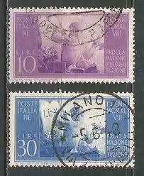 |
| HipStamp | Scott #2471 Priority Mail MNH | Europe - Italy, General Issue Stamp / HipStamp | 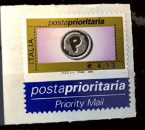 |
| Cherrystone Auctions | Germany, Poland, Garfield Collection of U.S. Postal Stationery - October 28-29, 2009 - GERMAN WORLD WAR II OCCUPATION ISSUES German Occupation of Zara | 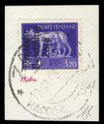 |
| italianstamps.co.uk | The Republic of Italy - Priority Post Definitives | 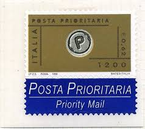 |
| Flickr | Democratica | luca locci | Flickr | 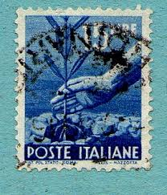 |
| eBay | 931147) Famous Persons, Health, WHO, Miscellaneous, Italy | eBay | 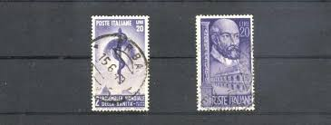 |
| HipStamp | Italy 1950 - U - Scott #549 | Europe - Italy, General Issue Stamp / HipStamp |  |
| Stamp Community Forum | Find This? Italian - Stamp Community Forum |  |
| eBay | ITALIEN 1949 774-776 gestempelt SCHÖNER SATZ ERP (F6147 | eBay | 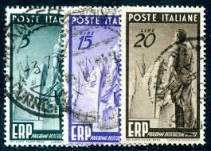 |
| Alamy | Hitler mussolini stamp hi-res stock photography and images - Alamy |  |
| Mercari | 1943 Poste vaticane postage stamps Like new | Mercari | 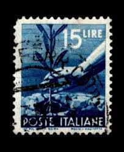 |
| Shutterstock | Crown Glory: Over 3,001 Royalty-Free Licensable Stock Photos | Shutterstock | 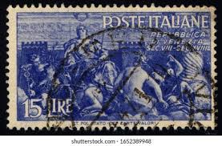 |
| eBay | TRIESTE SCOTT EY3 USED VF - 1949 15L VIO AUTHORIZED DELIVERY ISSUE W/ OVERPRINT | eBay | 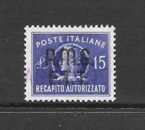 |
| eBay | 1949 TRIESTE A - Authorized Delivery 15 lire violet No. 3 MNH/** | eBay | |
| Shutterstock | Italia - hacia 1959 : Estampilla Foto de stock 2166347587 | Shutterstock | |
| eBay | 2003 Italy, Priority Post Euro 4.13 Purple Black Gold Grey No. 2769 - MNH** | eBay | |
| eBay | 2004 Italy, Posta Prioritaria, Euro 1 Blue Gold Black Yellow No. 2842 MNH** | eBay | |
| Cherrystone Auctions | Rare Stamps & Postal History of the World - January 14-15, 2020 - ITALY | |
| eBay | 2000 Republic Priority Post 0.62 Cent Black Gold Grey No. 2484 MNH** | eBay | |
| Dreamstime.com | El Sello De Póster Impreso En Italia Muestra a La Mano Plantando Un Olivo, Serie Democracia, 15 - Lira Italiana, Alrededor De 194 Foto editorial - Imagen de antigüedad, gente: 170578721 |